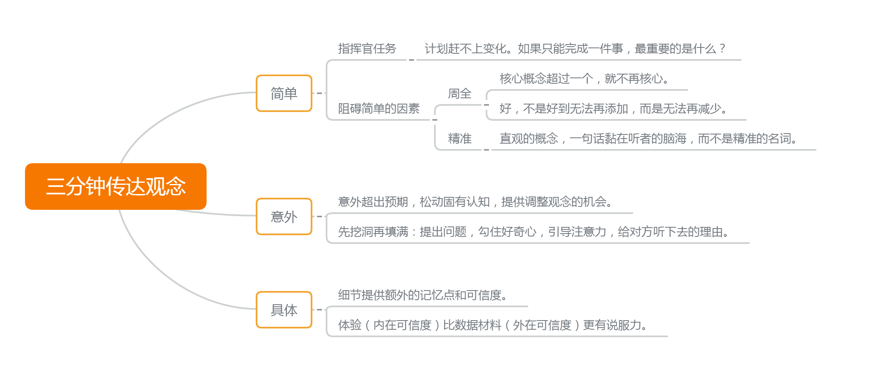

把话说清楚，本质上是要传达的内容，让受众听（看）进去。重要的首先是 内容 ，然后是传达的 形式 。
明确要传达的内容，想清楚。然后考虑场景和受众，调整内容的形式 。三分钟内口头传达一个观念，跟官方声明、法律文件，不是一回事。
日常更多是前者。有限时间和注意力，先求触及。听进去了，感兴趣了，才有机会深入，把细节交给 面谈、合同、规范 …… 写文章也在传达观念，多数人不是写论文 和 公文。匆匆路过的读者，注意力有限。
至于市面常见的技巧训练，在特定的、强调仪式感的场合有用；不分场合强调，是舍本逐末。
有价值的内容，来自积累与洞见。具体跟所在领域相关。读书与实践，增加输入，似乎是唯一的通用法门。
至于传达形式，见过太多说法，头绪纷乱。直到看了少爷一个视频，豁然开朗。后来写文卡住，翻出来看。再遇到瓶颈，再看。 一看就懂，一做肌肉记忆打回原形 。知易行难。那就用自己的话复述一下，顺便推荐给大家。
打（过）辩论的，没有不知道少爷（黄执中）的。通过《奇葩说》，现在更多人知道了他。
少爷说了啥？ 周全和精准，妨碍我们传达。
此话一出，命中强迫症要害。太想把话说圆满，反而引入更多漏洞，话说成了缠脚布，打满补丁。
有限时间、内容里，让观念牢牢黏在听众脑海，就三个词：
- 简单：给受众减负，让他在忘掉别的所有之后，只要记得一个。
- 意外：松动已有认知，调整观念，印象深刻。
- 具体：给细节，有画面感的细节。有温度的体验，强过冷冰冰的数据。

推荐你完整看下来，用自己的话复述 。B 站地址在这里：《黄执中：你如何听懂我说的话？》https://www.bilibili.com/video/BV1Y7411V7wW
视频记得是 16 年的，很早就看过，不知道为什么 B 站上日期变成最近的了。
是不是觉得道理『平平无奇』。不要围观，只有下场体验过求圆满时 加无可加 的无奈，才能理解 减无可减 的『简单』不简单。
而且他说的，有严格的上下文限定。不看上下文就质疑『怎么可能只缩减到一条』，属于抬杠。
我当年通过人人网（那时好像还叫校内），看剑气之争，还有价值之辩知道他。当时太年轻，还试图在师弟师妹面前挑他理论的毛病。
他的话当然不是权威，认真挑也可以挑出毛病。但是他在 辩论——或者说对受众进行观念传达上，投入精力之多、程度之深，多数人比不上。这种深入，让他比一般人多考虑了几层；我看到的问题，有时考虑浅了，更高层面就不存在了；有时问题确实存在，但对核心来说无关紧要。
这一节属于 『想要周全』 ，是 简单 的反面案例。
这些话跟主线相关性很弱，可有可无。抬杠的人那么多，堵得了多少个人的口。
不删了，留在这里当 具体 的例子，意不 意外？

本文为本人原创，采用知识共享 “署名-非商业性使用-相同方式共享” 4.0 (CC BY-NC-SA 4.0)”许可协议进行许可。
本作品可自由复制、传播及基于本作品进行演绎创作。如有以上需要，请留言告知，在文章开头明显位置加上署名（Jayce Chant）、原链接及许可协议信息，并明确指出修改（如有），不得用于商业用途。谢谢合作。
请点击查看协议的中文摘要。